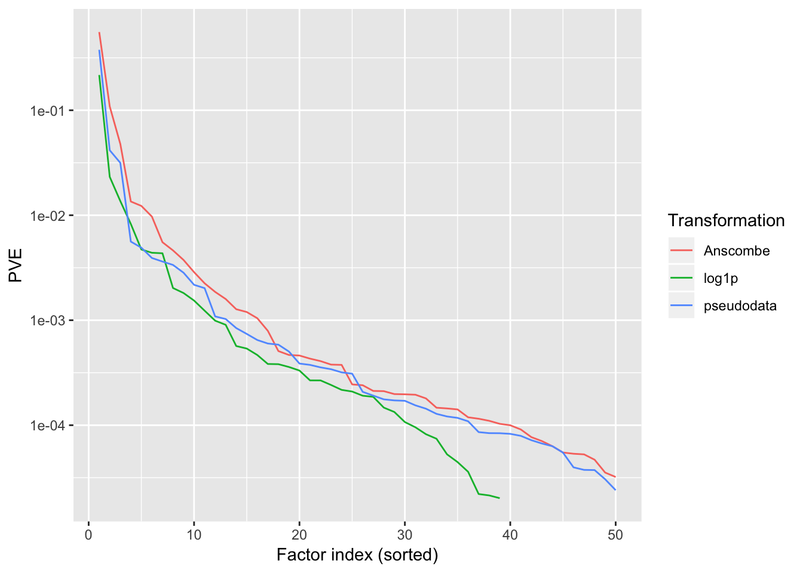
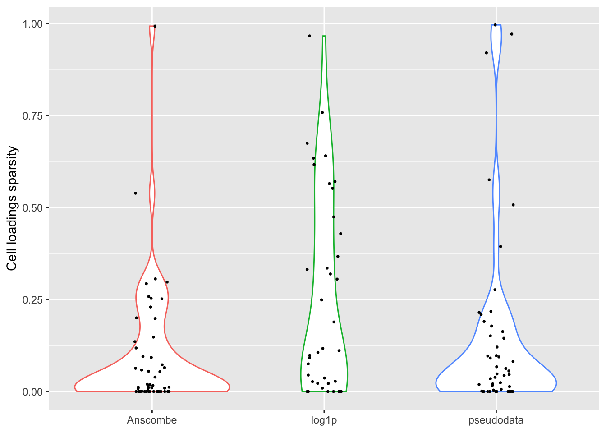
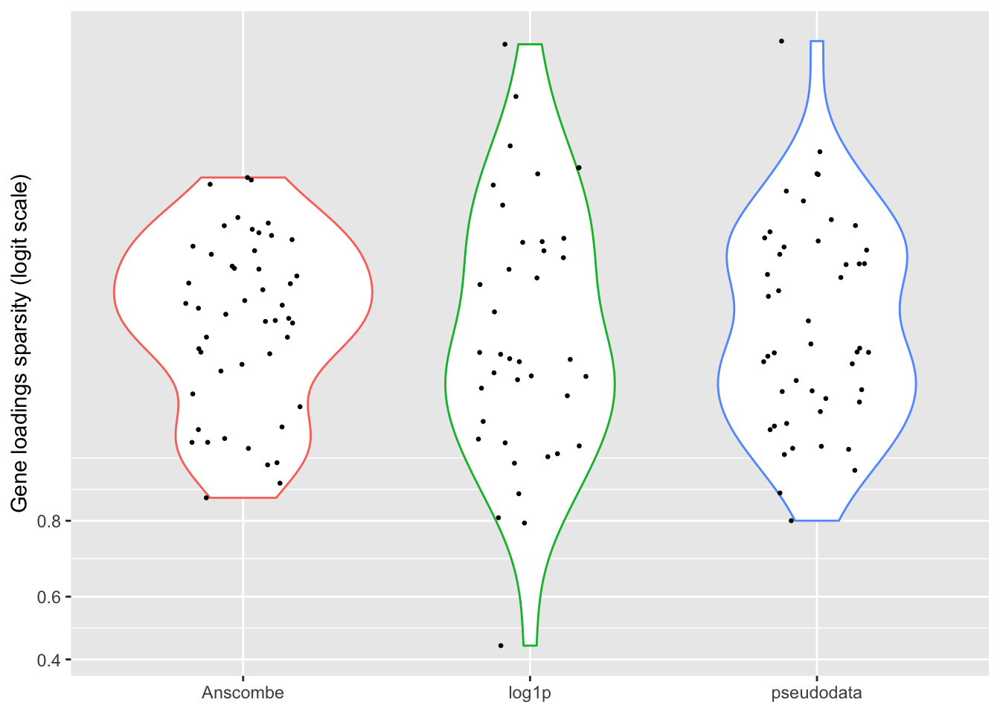
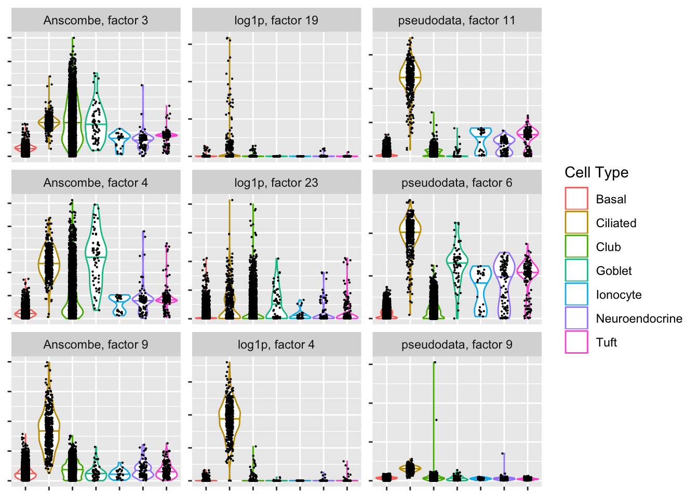
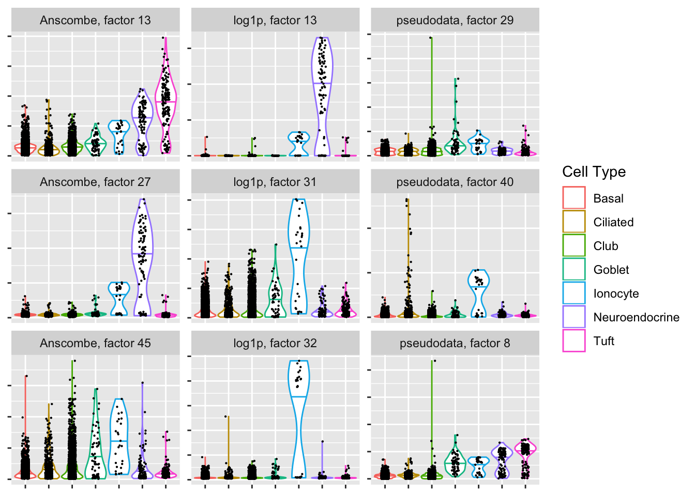
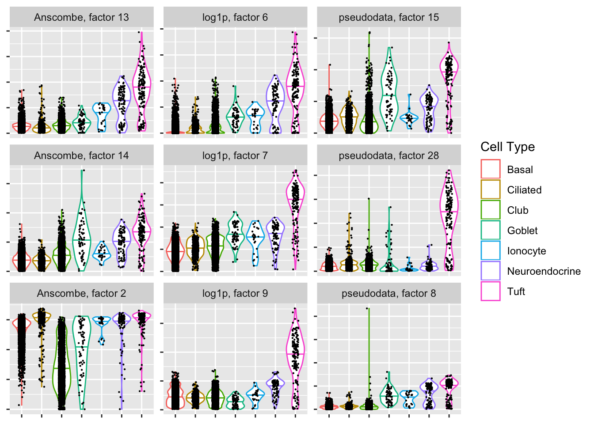

Last updated: 2019-02-25
workflowr checks: (Click a bullet for more information) ✔ R Markdown file: up-to-date
Great! Since the R Markdown file has been committed to the Git repository, you know the exact version of the code that produced these results.
✔ Environment: empty
Great job! The global environment was empty. Objects defined in the global environment can affect the analysis in your R Markdown file in unknown ways. For reproduciblity it’s best to always run the code in an empty environment.
✔ Seed:
set.seed(20180714)
The command set.seed(20180714) was run prior to running the code in the R Markdown file. Setting a seed ensures that any results that rely on randomness, e.g. subsampling or permutations, are reproducible.
✔ Session information: recorded
Great job! Recording the operating system, R version, and package versions is critical for reproducibility.
✔ Repository version: 45cc7cd
wflow_publish or wflow_git_commit). workflowr only checks the R Markdown file, but you know if there are other scripts or data files that it depends on. Below is the status of the Git repository when the results were generated:
Ignored files:
Ignored: .DS_Store
Ignored: .Rhistory
Ignored: .Rproj.user/
Ignored: data/.DS_Store
Ignored: docs/.DS_Store
Ignored: docs/figure/.DS_Store
Untracked files:
Untracked: analysis/gd_notes.Rmd
Untracked: code/count_sim.R
Untracked: code/pathways.R
Untracked: code/trachea3.R
Untracked: data/lowrank/
Untracked: data/tmp14.rds
Untracked: data/tmpdata.rds
Untracked: data/tmplfsr.rds
Untracked: data/trachea3/
Untracked: docs/figure/count_notes.Rmd/
Unstaged changes:
Deleted: data/before_bad.Rdata
| File | Version | Author | Date | Message |
|---|---|---|---|---|
| Rmd | 45cc7cd | Jason Willwerscheid | 2019-02-25 | wflow_publish(“analysis/trachea3.Rmd”) |
I fit FLASH objects to the 3’-droplet based dataset described in Montoro et al. (and also analyzed here). I take three approaches:
Use the Anscombe transform \(X_{ij} = \sqrt{Y_{ij} + 3/8}\) and fix all standard errors at 1.
Use the log1p transform \(X_{ij} = \log(Y_{ij} + 1)\) and fix standard errors \(S = \frac{\sqrt{Y_{ij}}}{Y_{ij} + 1}\) (motivated by assuming \(Y_{ij} \sim \text{Poisson}(\lambda_{ij})\), taking the MLE \(\hat{\lambda}_{ij} = Y_{ij}\), and estimating the variance of \(\log(Y_{ij} + 1)\) via Taylor expansion). To avoid setting \(S_{ij} = 0\), I set \(S_{ij} = 1/2\) when \(Y_{ij} = 0\).
Use the more complicated approach described here, with “pseudodata” \(X\) and \(S\) obtained by expanding the Poisson log likelihood around the posterior means yielded by the “log1p” fit described above.
In each case, I fit a maximum of 50 factors. I calculate local false sign rates for gene-factor pairs by sampling from the posterior.
The code used to produce the fits and sample from the posterior is as follows.
devtools::load_all("~/Github/ashr")
devtools::load_all("~/Github/flashier")
library(Matrix)
# Anscombe transform --------------------------------------------------------
trachea <- read.table("~/Downloads/GSE103354_Trachea_droplet_UMIcounts.txt")
trachea <- as.matrix(trachea)
# trachea <- Matrix(trachea)
trachea <- 2 * sqrt(trachea + 0.375)
# ncells <- rowSums(trachea > 0)
# gene.idx <- which(ncells > 4)
# trachea <- trachea[gene.idx, ]
# saveRDS(trachea, "./data/tmpdata.rds")
trachea <- readRDS("./data/tmpdata.rds")
# Let's flash.
flash.fit <- flashier(trachea,
S = 1, var.type = NULL,
prior.type = c("normal.mix", "nonnegative"),
greedy.Kmax = 10,
backfit = "alternating", backfit.order = "dropout",
backfit.maxiter = 5, backfit.reltol = 10,
verbose = 3)
# saveRDS(flash.fit, "./data/tmp.rds")
flash.fit2 <- flashier(trachea, flash.init = flash.fit,
S = 1, var.type = NULL,
prior.type = c("normal.mix", "nonnegative"),
greedy.Kmax = 25,
backfit = "alternating", backfit.order = "dropout",
backfit.maxiter = 3, backfit.reltol = 10,
verbose = 3)
# saveRDS(flash.fit2, "./data/tmp2.rds")
# rm(flash.fit)
flash.fit3 <- flashier(trachea, flash.init = flash.fit2,
S = 1, var.type = NULL,
prior.type = c("normal.mix", "nonnegative"),
greedy.Kmax = 50,
backfit.every = 3, backfit.order = "dropout",
backfit.maxiter = 5, backfit.reltol = 10,
verbose = 3)
# saveRDS(flash.fit3, "./data/tmp3.rds")
# rm(flash.fit2)
flash.fit4 <- flashier(trachea, flash.init = flash.fit3,
S = 1, var.type = NULL,
prior.type = c("normal.mix", "nonnegative"),
greedy.Kmax = 50,
final.backfit = TRUE, backfit.order = "dropout",
backfit.maxiter = 100, backfit.reltol = 10,
verbose = 3)
# saveRDS(flash.fit4, "./data/Anscombe50.rds")
# rm(flash.fit3)
n.rounds <- 25
samps.per.round <- 20
fl <- flash.fit4
gene.signs <- sign(fl$loadings$normalized.loadings[[1]])
lfsr <- array(0, dim = dim(gene.signs))
set.seed(666)
for (i in 1:n.rounds) {
cat(paste("Sampling round", i, "\n"))
samp <- fl$sampler(samps.per.round)
samp <- lapply(samp, `[[`, 1)
samp <- lapply(samp, sign)
samp <- lapply(samp, function(x) x == gene.signs)
lfsr <- lfsr + Reduce(`+`, samp)
}
lfsr <- lfsr / (n.rounds * samps.per.round)
# saveRDS(lfsr, "./data/AnscombeLFSR.rds")
# log1p transform -----------------------------------------------------------
trachea <- read.table("~/Downloads/GSE103354_Trachea_droplet_UMIcounts.txt")
trachea <- as.matrix(trachea)
trachea <- log1p(trachea)
# saveRDS(trachea, "./data/tmpdata.rds")
# trachea <- readRDS("./data/tmpdata.rds")
S <- sqrt(trachea) / (trachea + 1)
S[S == 0] <- 0.5
trachea <- set.flash.data(data = trachea, S = S, var.type = NULL)
rm(S)
flash.fit <- flashier(trachea, var.type = NULL,
prior.type = c("normal.mix", "nonnegative"),
greedy.Kmax = 10,
backfit = "alternating", backfit.order = "dropout",
backfit.maxiter = 5, backfit.reltol = 10,
verbose = 3)
# saveRDS(flash.fit, "./tmp.rds")
flash.fit2 <- flashier(trachea, flash.init = flash.fit,
var.type = NULL,
prior.type = c("normal.mix", "nonnegative"),
greedy.Kmax = 25,
backfit = "alternating", backfit.order = "dropout",
backfit.maxiter = 3, backfit.reltol = 10,
verbose = 3)
# saveRDS(flash.fit2, "./tmp2.rds")
# rm(flash.fit)
flash.fit3 <- flashier(trachea, flash.init = flash.fit2,
var.type = NULL,
prior.type = c("normal.mix", "nonnegative"),
greedy.Kmax = 50,
backfit.every = 3, backfit.order = "dropout",
backfit.maxiter = 5, backfit.reltol = 10,
verbose = 3)
saveRDS(flash.fit3, "./log1p39.rds")
fl <- flash.fit3
gene.signs <- sign(fl$loadings$normalized.loadings[[1]])
lfsr <- array(0, dim = dim(gene.signs))
set.seed(666)
for (i in 1:n.rounds) {
cat(paste("Sampling round", i, "\n"))
samp <- fl$sampler(samps.per.round)
samp <- lapply(samp, `[[`, 1)
samp <- lapply(samp, sign)
samp <- lapply(samp, function(x) x == gene.signs)
lfsr <- lfsr + Reduce(`+`, samp)
}
lfsr <- lfsr / (n.rounds * samps.per.round)
# saveRDS(lfsr, "./data/log1pLFSR.rds")
# "pseudodata" approach -----------------------------------------------------
Y <- read.table("~/Downloads/GSE103354_Trachea_droplet_UMIcounts.txt")
Y <- as.matrix(Y)
log.pm <- flashier:::lowrank.expand(flash.fit3$fit$EF)
pm <- exp(log.pm)
X <- log.pm + (Y - pm) / pm
S <- 1 / sqrt(pm)
rm(Y)
rm(log.pm)
rm(pm)
pseudodata <- set.flash.data(data = X, S = S, var.type = NULL)
rm(X)
rm(S)
flash.fit <- flashier(pseudodata, var.type = NULL,
prior.type = c("normal.mix", "nonnegative"),
greedy.Kmax = 10,
backfit = "alternating", backfit.order = "dropout",
backfit.maxiter = 5, backfit.reltol = 10,
verbose = 3)
# saveRDS(flash.fit, "./tmp.rds")
flash.fit2 <- flashier(pseudodata, flash.init = flash.fit,
prior.type = c("normal.mix", "nonnegative"),
greedy.Kmax = 25,
backfit = "alternating", backfit.order = "dropout",
backfit.maxiter = 3, backfit.reltol = 10,
verbose = 3)
# saveRDS(flash.fit2, "./tmp2.rds")
# rm(flash.fit)
flash.fit3 <- flashier(pseudodata, flash.init = flash.fit2,
prior.type = c("normal.mix", "nonnegative"),
greedy.Kmax = 50,
backfit.every = 3, backfit.order = "dropout",
backfit.maxiter = 5, backfit.reltol = 10,
verbose = 3)
# saveRDS(flash.fit3, "./data/tmp3.rds")
# rm(flash.fit2)
flash.fit4 <- flashier(pseudodata, flash.init = flash.fit3,
prior.type = c("normal.mix", "nonnegative"),
greedy.Kmax = 50,
final.backfit = TRUE, backfit.order = "dropout",
backfit.maxiter = 100, backfit.reltol = 10,
verbose = 3)
# saveRDS(flash.fit4, "./data/pseudo50.rds")
# rm(flash.fit3)
fl <- flash.fit4
gene.signs <- sign(fl$loadings$normalized.loadings[[1]])
lfsr <- array(0, dim = dim(gene.signs))
set.seed(666)
for (i in 1:n.rounds) {
cat(paste("Sampling round", i, "\n"))
samp <- fl$sampler(samps.per.round)
samp <- lapply(samp, `[[`, 1)
samp <- lapply(samp, sign)
samp <- lapply(samp, function(x) x == gene.signs)
lfsr <- lfsr + Reduce(`+`, samp)
}
lfsr <- lfsr / (n.rounds * samps.per.round)
# saveRDS(lfsr, "./data/pseudoLFSR.rds")I pre-run the code and load the results from file.
library(ggplot2)
library(clusterProfiler)
fl.anscombe <- readRDS("./data/trachea3/Anscombe50nodata.rds")
lfsr.anscombe <- readRDS("./data/trachea3/AnscombeLFSR.rds")
fl.log1p <- readRDS("./data/trachea3/log1p39nodata.rds")
lfsr.log1p <- readRDS("./data/trachea3/log1pLFSR.rds")
fl.pseudo <- readRDS("./data/trachea3/pseudo50nodata.rds")
lfsr.pseudo <- readRDS("./data/trachea3/pseudoLFSR.rds")The most important thing to note here is that the “log1p” method halts after adding 39 factors, whereas the other two methods add a full 50 factors. A smaller number of factors is certainly desirable for interpretability, but it’s not at all implausible that more than 50 factors are “really” in play.
all.fl <- list(fl.anscombe, fl.log1p, fl.pseudo)
all.pve <- unlist(lapply(all.fl, function(fl) sort(fl$pve, decreasing = TRUE)))
all.nfactors <- sapply(all.fl, `[[`, "n.factors")
factor.idx <- unlist(lapply(all.nfactors, function(n) 1:n))
trans.names <- c("Anscombe", "log1p", "pseudodata")
pve.df <- data.frame(trans = rep(trans.names, times = all.nfactors),
idx = factor.idx,
pve = all.pve)
ggplot(pve.df, aes(x = idx, y = pve, color = trans)) +
geom_line() +
labs(x = "Factor index (sorted)", color = "Transformation") +
scale_y_continuous(name = "PVE", trans = "log10")
For some reason, the “log1p” method produces many more factors that have sparse cell loadings, and a few more factors with very sparse gene loadings.
gene.sparsity <- unlist(lapply(all.fl, function(fl) {
sapply(fl$fit$g, function(x) x[[1]]$pi[1])
}))
cell.sparsity <- unlist(lapply(all.fl, function(fl) {
sapply(fl$fit$g, function(x) x[[2]]$pi[1])
}))
sparsity.df <- data.frame(trans = rep(trans.names, times = all.nfactors),
idx = factor.idx,
cell.sparsity = cell.sparsity,
gene.sparsity = gene.sparsity)
ggplot(sparsity.df, aes(x = trans, y = cell.sparsity)) +
geom_violin(aes(color = trans)) +
geom_jitter(width = 0.1, cex = 0.5) +
labs(x = NULL, y = "Cell loadings sparsity") +
theme(legend.position = "none")
ggplot(subset(sparsity.df, gene.sparsity > 0),
aes(x = trans, y = gene.sparsity)) +
geom_violin(aes(color = trans)) +
geom_jitter(width = 0.2, cex = 0.5) +
scale_y_continuous(name = "Gene loadings sparsity (logit scale)",
trans = "logit") +
labs(x = NULL) +
theme(legend.position = "none")
Since the cells were labeled using a clustering of log-transformed data, it’s probably unfair to judge the other two methods based on how well they cluster the data. Still, the “pseudodata” approach produces at least one clean ciliated-specific factor, whereas the “Anscombe” approach doesn’t produce any bimodal factors that are predominantly weighted on ciliated cells.
n <- nrow(fl.log1p$loadings$normalized.loadings[[2]])
cell.names <- rownames(fl.log1p$loadings$normalized.loadings[[2]])
mouse <- as.factor(sapply(strsplit(cell.names, "_"), `[`, 1))
cell.types <- as.factor(sapply(strsplit(cell.names, "_"), `[`, 3))
find.factors <- function(fl, cell.type, top.n) {
cell.loadings <- fl$loadings$normalized.loadings[[2]]
which.cells <- which(cell.types == cell.type)
ks.tests <- apply(cell.loadings, 2, function(LL) {
ks.test(LL[which.cells], LL[-which.cells], alternative = "less")
})
p.vals <- sapply(ks.tests, `[[`, "p.value")
which.k <- order(p.vals)[1:top.n]
return(list(k = which.k, p = signif(p.vals[which.k], digits = 2)))
}
cell.type.df <- function(cell.type, top.n) {
factors <- lapply(all.fl, find.factors, cell.type, top.n)
loadings <- as.vector(mapply(function(fl, factors) {
fl$loadings$normalized.loadings[[2]][, factors$k]
}, all.fl, factors))
df <- data.frame(trans = rep(trans.names, each = top.n * n),
k = paste("factor",
rep(unlist(lapply(factors, `[[`, "k")), each = n)),
loading = loadings,
cell.type = rep(cell.types, times = 3 * top.n))
}
plot.top.n <- function(cell.type, top.n) {
df <- cell.type.df(cell.type, top.n)
plot(ggplot(df, aes_string(x = "cell.type", y = "loading")) +
geom_violin(aes(color = cell.type),
scale = "width", draw_quantiles = 0.5) +
geom_jitter(width = 0.15, cex = 0.1) +
facet_wrap(facets = vars(trans, k), nrow = top.n, ncol = 3,
dir = "v", scales = "free_y",
labeller = labeller(.multi_line = FALSE)) +
labs(x = NULL, y = NULL, color = "Cell Type") +
theme(axis.text.x = element_blank(),
axis.text.y = element_blank()))
}
plot.top.n("Ciliated", 3)
all.genes <- rownames(fl.log1p$loadings$normalized.loadings[[1]])
all.entrez <- bitr(all.genes,
fromType = "SYMBOL",
toType = "ENTREZID",
OrgDb = "org.Mm.eg.db")$ENTREZID
find.pathways <- function(fl, lfsr, k,
lfsr.cutoff = .995,
over = TRUE,
top.n = 5) {
if (over)
idx <- which((lfsr[, k] > lfsr.cutoff)
& (fl$loadings$normalized.loadings[[1]][, k] > 0))
else
idx <- which((lfsr[, k] > lfsr.cutoff)
& (fl$loadings$normalized.loadings[[1]][, k] < 0))
genes <- all.genes[idx]
entrez <- bitr(genes,
fromType = "SYMBOL",
toType = "ENTREZID",
OrgDb = "org.Mm.eg.db")$ENTREZID
enrich.res <- enrichGO(entrez,
universe = all.entrez,
OrgDb = "org.Mm.eg.db",
ont = "BP",
pAdjustMethod = "BH",
pvalueCutoff = 0.001,
readable = TRUE)
n.rows <- min(top.n, nrow(enrich.res@result))
if (n.rows > 0) {
simp.res <- simplify(enrich.res)@result[1:n.rows,
c("Description", "p.adjust")]
} else {
simp.res <- "No pathways were found."
}
return(simp.res)
}
knitr::kable(find.pathways(fl.anscombe, lfsr.anscombe, 9),
caption = "Anscombe (factor 9)",
format.args = list(scientific = TRUE))| Description | p.adjust | |
|---|---|---|
| GO:0044782 | cilium organization | 0e+00 |
| GO:0060271 | cilium assembly | 0e+00 |
| GO:0030031 | cell projection assembly | 0e+00 |
| GO:0120031 | plasma membrane bounded cell projection assembly | 0e+00 |
| GO:0007018 | microtubule-based movement | 0e+00 |
knitr::kable(find.pathways(fl.log1p, lfsr.log1p, 19),
caption = "log1p (factor 19)",
format.args = list(scientific = TRUE))| Description | p.adjust | |
|---|---|---|
| GO:0044782 | cilium organization | 0.0e+00 |
| GO:0060271 | cilium assembly | 0.0e+00 |
| GO:0120031 | plasma membrane bounded cell projection assembly | 5.0e-07 |
| GO:0030031 | cell projection assembly | 5.0e-07 |
| GO:1904874 | positive regulation of telomerase RNA localization to Cajal body | 3.6e-06 |
knitr::kable(find.pathways(fl.log1p, lfsr.log1p, 4),
caption = "log1p (factor 4)",
format.args = list(scientific = TRUE))| Description | p.adjust | |
|---|---|---|
| GO:0044782 | cilium organization | 0e+00 |
| GO:0060271 | cilium assembly | 0e+00 |
| GO:0030031 | cell projection assembly | 0e+00 |
| GO:0120031 | plasma membrane bounded cell projection assembly | 0e+00 |
| GO:0007018 | microtubule-based movement | 0e+00 |
knitr::kable(find.pathways(fl.pseudo, lfsr.pseudo, 11),
caption = "Pseudodata (factor 11)",
format.args = list(scientific = TRUE))| Description | p.adjust | |
|---|---|---|
| GO:0044782 | cilium organization | 0e+00 |
| GO:0060271 | cilium assembly | 0e+00 |
| GO:0030031 | cell projection assembly | 0e+00 |
| GO:0120031 | plasma membrane bounded cell projection assembly | 0e+00 |
| GO:0007018 | microtubule-based movement | 0e+00 |
knitr::kable(find.pathways(fl.anscombe, lfsr.anscombe, 9, over = FALSE),
caption = "Anscombe (factor 9)",
format.args = list(scientific = TRUE))| Description | p.adjust | |
|---|---|---|
| GO:0045807 | positive regulation of endocytosis | 3.03e-05 |
| GO:0009617 | response to bacterium | 8.60e-05 |
| GO:0050678 | regulation of epithelial cell proliferation | 8.60e-05 |
| GO:0042742 | defense response to bacterium | 8.60e-05 |
| GO:0050673 | epithelial cell proliferation | 8.60e-05 |
knitr::kable(find.pathways(fl.log1p, lfsr.log1p, 19, over = FALSE),
caption = "log1p (factor 19)",
format.args = list(scientific = TRUE))| x |
|---|
| No pathways were found. |
knitr::kable(find.pathways(fl.log1p, lfsr.log1p, 4, over = FALSE),
caption = "log1p (factor 4)",
format.args = list(scientific = TRUE))| Description | p.adjust | |
|---|---|---|
| GO:0002181 | cytoplasmic translation | 0.000e+00 |
| GO:0000028 | ribosomal small subunit assembly | 3.630e-05 |
| GO:0006081 | cellular aldehyde metabolic process | 1.817e-04 |
knitr::kable(find.pathways(fl.pseudo, lfsr.pseudo, 11, over = FALSE),
caption = "Pseudodata (factor 11)",
format.args = list(scientific = TRUE))| Description | p.adjust | |
|---|---|---|
| GO:0002181 | cytoplasmic translation | 7.000e-07 |
| GO:0070972 | protein localization to endoplasmic reticulum | 6.184e-04 |
| GO:0000028 | ribosomal small subunit assembly | 6.184e-04 |
| GO:0009410 | response to xenobiotic stimulus | 6.184e-04 |
| GO:0006805 | xenobiotic metabolic process | 6.184e-04 |
If ionocytes are in fact a distinct cell type, and if the clustering is at all close to reality, then both the Anscombe and pseudodata approaches have trouble picking them out.
plot.top.n("Ionocyte", 3)
knitr::kable(find.pathways(fl.log1p, lfsr.log1p, 31),
caption = "log1p (factor 31)",
format.args = list(scientific = TRUE))| Description | p.adjust | |
|---|---|---|
| GO:0035821 | modification of morphology or physiology of other organism | 5.103e-04 |
knitr::kable(find.pathways(fl.log1p, lfsr.log1p, 32),
caption = "log1p (factor 32)",
format.args = list(scientific = TRUE))| Description | p.adjust | |
|---|---|---|
| GO:1902600 | hydrogen ion transmembrane transport | 4.1e-06 |
| GO:0015992 | proton transport | 4.1e-06 |
| GO:0006818 | hydrogen transport | 4.1e-06 |
| GO:0046034 | ATP metabolic process | 4.1e-06 |
| GO:0009205 | purine ribonucleoside triphosphate metabolic process | 7.0e-06 |
knitr::kable(find.pathways(fl.pseudo, lfsr.pseudo, 40),
caption = "Pseudodata (factor 40)",
format.args = list(scientific = TRUE))| Description | p.adjust | |
|---|---|---|
| GO:0044782 | cilium organization | 0.00e+00 |
| GO:0060271 | cilium assembly | 2.00e-07 |
| GO:0120031 | plasma membrane bounded cell projection assembly | 1.14e-05 |
| GO:0030031 | cell projection assembly | 1.22e-05 |
knitr::kable(find.pathways(fl.log1p, lfsr.log1p, 31, over = FALSE),
caption = "log1p (factor 31)",
format.args = list(scientific = TRUE))| Description | p.adjust | |
|---|---|---|
| GO:0045668 | negative regulation of osteoblast differentiation | 1.702e-04 |
| GO:0071248 | cellular response to metal ion | 1.702e-04 |
| GO:0010038 | response to metal ion | 1.702e-04 |
| GO:0030279 | negative regulation of ossification | 6.072e-04 |
| NA | NA | NA |
knitr::kable(find.pathways(fl.log1p, lfsr.log1p, 32, over = FALSE),
caption = "log1p (factor 32)",
format.args = list(scientific = TRUE))| x |
|---|
| No pathways were found. |
knitr::kable(find.pathways(fl.pseudo, lfsr.pseudo, 40, over = FALSE),
caption = "Pseudodata (factor 40)",
format.args = list(scientific = TRUE))| x |
|---|
| No pathways were found. |
If the given clustering is accurate, then the Anscombe transform again has difficulty.
plot.top.n("Tuft", 3)
knitr::kable(find.pathways(fl.anscombe, lfsr.anscombe, 13),
caption = "Anscombe (factor 13)",
format.args = list(scientific = TRUE))| Description | p.adjust | |
|---|---|---|
| GO:0046034 | ATP metabolic process | 0e+00 |
| GO:0009205 | purine ribonucleoside triphosphate metabolic process | 0e+00 |
| GO:0033108 | mitochondrial respiratory chain complex assembly | 0e+00 |
| GO:0007005 | mitochondrion organization | 0e+00 |
| GO:0097031 | mitochondrial respiratory chain complex I biogenesis | 0e+00 |
knitr::kable(find.pathways(fl.log1p, lfsr.log1p, 7),
caption = "log1p (factor 7)",
format.args = list(scientific = TRUE))| Description | p.adjust | |
|---|---|---|
| GO:0002181 | cytoplasmic translation | 2.10e-06 |
| GO:0072593 | reactive oxygen species metabolic process | 5.70e-06 |
| GO:0009617 | response to bacterium | 6.10e-06 |
| GO:0046034 | ATP metabolic process | 1.14e-05 |
| GO:0043618 | regulation of transcription from RNA polymerase II promoter in response to stress | 1.41e-05 |
knitr::kable(find.pathways(fl.log1p, lfsr.log1p, 9),
caption = "log1p (factor 9)",
format.args = list(scientific = TRUE))| Description | p.adjust | |
|---|---|---|
| GO:0046034 | ATP metabolic process | 3.31e-05 |
| GO:0009205 | purine ribonucleoside triphosphate metabolic process | 4.64e-05 |
| GO:0009126 | purine nucleoside monophosphate metabolic process | 4.64e-05 |
| GO:0009167 | purine ribonucleoside monophosphate metabolic process | 4.64e-05 |
| GO:0009199 | ribonucleoside triphosphate metabolic process | 4.64e-05 |
knitr::kable(find.pathways(fl.pseudo, lfsr.pseudo, 15),
caption = "Pseudodata (factor 15)",
format.args = list(scientific = TRUE))| Description | p.adjust | |
|---|---|---|
| GO:0015992 | proton transport | 1.249e-04 |
| GO:0006818 | hydrogen transport | 1.249e-04 |
| GO:0042775 | mitochondrial ATP synthesis coupled electron transport | 4.264e-04 |
| GO:0042773 | ATP synthesis coupled electron transport | 4.264e-04 |
| GO:0009141 | nucleoside triphosphate metabolic process | 6.498e-04 |
knitr::kable(find.pathways(fl.pseudo, lfsr.pseudo, 28),
caption = "Pseudodata (factor 28)",
format.args = list(scientific = TRUE))| x |
|---|
| No pathways were found. |
knitr::kable(find.pathways(fl.anscombe, lfsr.anscombe, 13, over = FALSE),
caption = "Anscombe (factor 13)",
format.args = list(scientific = TRUE))| Description | p.adjust | |
|---|---|---|
| GO:0032787 | monocarboxylic acid metabolic process | 7.000e-07 |
| GO:0006805 | xenobiotic metabolic process | 2.312e-04 |
| GO:0009636 | response to toxic substance | 6.002e-04 |
| GO:0009410 | response to xenobiotic stimulus | 7.288e-04 |
| NA | NA | NA |
knitr::kable(find.pathways(fl.log1p, lfsr.log1p, 7, over = FALSE),
caption = "log1p (factor 7)",
format.args = list(scientific = TRUE))| Description | p.adjust | |
|---|---|---|
| GO:0045333 | cellular respiration | 0e+00 |
| GO:0006099 | tricarboxylic acid cycle | 0e+00 |
| GO:0051186 | cofactor metabolic process | 0e+00 |
| GO:0044282 | small molecule catabolic process | 0e+00 |
| GO:0009126 | purine nucleoside monophosphate metabolic process | 0e+00 |
knitr::kable(find.pathways(fl.log1p, lfsr.log1p, 9, over = FALSE),
caption = "log1p (factor 9)",
format.args = list(scientific = TRUE))| Description | p.adjust | |
|---|---|---|
| GO:0042060 | wound healing | 2.30e-06 |
| GO:0006897 | endocytosis | 2.30e-06 |
| GO:0045807 | positive regulation of endocytosis | 3.80e-06 |
| GO:0031589 | cell-substrate adhesion | 2.14e-05 |
| GO:0052547 | regulation of peptidase activity | 3.06e-05 |
knitr::kable(find.pathways(fl.pseudo, lfsr.pseudo, 15, over = FALSE),
caption = "Pseudodata (factor 15)",
format.args = list(scientific = TRUE))| Description | p.adjust | |
|---|---|---|
| GO:0006457 | protein folding | 5.49e-05 |
knitr::kable(find.pathways(fl.pseudo, lfsr.pseudo, 28, over = FALSE),
caption = "Pseudodata (factor 28)",
format.args = list(scientific = TRUE))| x |
|---|
| No pathways were found. |
sessionInfo()R version 3.4.3 (2017-11-30)
Platform: x86_64-apple-darwin15.6.0 (64-bit)
Running under: macOS High Sierra 10.13.6
Matrix products: default
BLAS: /Library/Frameworks/R.framework/Versions/3.4/Resources/lib/libRblas.0.dylib
LAPACK: /Library/Frameworks/R.framework/Versions/3.4/Resources/lib/libRlapack.dylib
locale:
[1] en_US.UTF-8/en_US.UTF-8/en_US.UTF-8/C/en_US.UTF-8/en_US.UTF-8
attached base packages:
[1] parallel stats4 stats graphics grDevices utils datasets
[8] methods base
other attached packages:
[1] org.Mm.eg.db_3.5.0 AnnotationDbi_1.40.0 IRanges_2.12.0
[4] S4Vectors_0.16.0 Biobase_2.38.0 BiocGenerics_0.24.0
[7] clusterProfiler_3.6.0 DOSE_3.4.0 ggplot2_3.1.0
loaded via a namespace (and not attached):
[1] Rcpp_1.0.0 GO.db_3.5.0 tidyr_0.7.2
[4] assertthat_0.2.0 rprojroot_1.3-2 digest_0.6.18
[7] R6_2.3.0 plyr_1.8.4 backports_1.1.2
[10] RSQLite_2.0 evaluate_0.12 highr_0.7
[13] pillar_1.2.1 rlang_0.3.0.1 lazyeval_0.2.1
[16] data.table_1.12.0 whisker_0.3-2 blob_1.1.0
[19] R.utils_2.6.0 R.oo_1.21.0 qvalue_2.10.0
[22] rmarkdown_1.11 labeling_0.3 splines_3.4.3
[25] BiocParallel_1.12.0 stringr_1.3.1 igraph_1.1.2
[28] bit_1.1-12 munsell_0.5.0 fgsea_1.4.1
[31] compiler_3.4.3 xfun_0.4 pkgconfig_2.0.1
[34] htmltools_0.3.6 tidyselect_0.2.3 tibble_1.4.2
[37] gridExtra_2.3 workflowr_1.0.1 dplyr_0.7.4
[40] withr_2.1.2.9000 R.methodsS3_1.7.1 grid_3.4.3
[43] gtable_0.2.0 DBI_0.7 git2r_0.21.0
[46] magrittr_1.5 scales_1.0.0 stringi_1.2.4
[49] GOSemSim_2.4.1 reshape2_1.4.3 bindrcpp_0.2
[52] DO.db_2.9 flashier_0.1.0 rvcheck_0.1.3
[55] fastmatch_1.1-0 tools_3.4.3 bit64_0.9-7
[58] glue_1.3.0 purrr_0.2.4 yaml_2.2.0
[61] colorspace_1.3-2 memoise_1.1.0 knitr_1.21.6
[64] bindr_0.1 This reproducible R Markdown analysis was created with workflowr 1.0.1